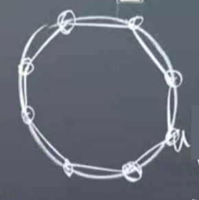
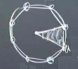
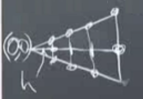
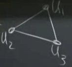
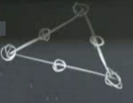
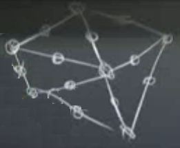
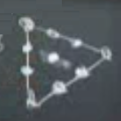

Ders 1.27
Bu derse vereceğim ödevi tarif ederek başlayayım, ödevde Poisson denkleminin çözümünü, ama sınırları kare değil çember olan bir ızgarada çözmenizi isteyeceğim. Çözülecek denklem
$$ -u_{xx} - u_{yy} = 4 $$
Eşitliğin sağ tarafı $f$, ve bu $f$ sabit olduğu için $v$ ile çarpım sonrası alınacak entegraller daha basit oluyor tabii, sabit çarpı deneme fonksiyonu, kolay hesap. Sınırda, çember üzerinde, $u = 0$ şartını koyuyoruz. Bu sistemi çözeceğiz. Analitik çözümün ne olduğunu görmek zor değil, $u = 1 - x^2 - y^2$. Yerine koyarsak doğrulaması kolay, iki kere $x$ türevi 2, $y$ türevi 2, toplam 4.
Çember içindeki ızgaraya önce bir poligonla başlıyorum. Bu arada araştırma sorusu bağlamında aklımdaki sorulardan biri hesabın ortaya çıkaracağı hata miktarı. Bazı ızgaralar diğerlerinden daha iyi olabilir.

Neyse, sınır şartımızı hatırlarsak düz çizgilerin çembere değdiği noktalarda $u = 0$. $M$ tane köşe olsun, ve orta noktadan köşelere çizgiler çekerek üçgenler oluşturalım, altta üçgenlerden biri görülüyor,

Üçgenin alt iki köşesinde tabii ki $u = 0$ şartı geçerli. İki üçgen arasındaki sınırda ise doğal sınır şartı denilen Neumann şartı geçerli olacak, eğimin sıfır olma şartı, yani $\mathrm{d} u / \mathrm{d} n = 0$. Orijinde ne yapmamız gerektiğini şimdilik bilmiyoruz.
Gerçek bir problem işte burada. Muhakkak problem biraz yapay, çünkü analitik çözümün ne olduğunu biliyoruz, ama mesela bu problemde hesap yapmak, hatanın ne olacağını düşünmek, bunlar hala ilginç sorular ve ciddi işler.
Bu problemi çözerken parçasal lineer öğeler (piecewise linear elements) kullanmanızı isteyeceğim, daha önce bahsettiğim piramitler bunlar. Ama bazılarınız karesel (quadratic) öğeler kullanmak isterse buna hayır demem. Bu öğeler daha hassas / doğru sonuçlar verecektir.
Şimdi ızgarayı daha detaylı şekilde yaratalım. Bir liste yaratacağız, bu listede ızgara noktaları olacak, bu liste çözüm algoritmasına verilecek ve algoritma oradan devam edecek. Çember içinde daha önce yarattığımız üçgenlerden iki tanesini yanyana düşünelim, en sağ üstteki nokta nerededir? $(\cos \pi/8, \sin \pi/8)$ değil mi? Sonra en soldan en sağa $N$ tane (resimde $N=4$) düğüm daha koyarız, her aralık yatay eksende $h$ büyüklüğünde olabilir, ve $N h = \cos\pi/8$ tabii ki. Sonra dörtgenleri ortadan kesen çizgiler de ekliyorum ve alttaki şekil ortaya çıkıyor,

Izgara düğüm noktalarına indis atamak iyi olur, soldan sağa önce orta çizgi üzerinde 1,2,3,4,5 diye gideriz, sonra üst kenar, ardından alt, 13 tane düğüm olur. Üçgenlere de indis atarız, 14 tane üçgen var. Düğüm noktalarının listesi (0,0), (h,0), (2h,0), .. diye gidecek. Peki üçgenler? Onları köşe indisleriyle belirtebiliriz, her üçgen için üç tane.
Bu listeleri alan kod bir $K$ matrisi oluşturur, matris eşsiz (singular) olur çünkü sınır şartları daha içinde yok. En sağ üç nokta sıfırlandıktan sonra (sınır şartı onları etkiliyor) matris tersi çevrilebilir hale gelir, ve $Ku = f$ çözülür. Kodun yaptığı $K$ ve $f$'yi oluşturmak.
Üçgen şekilleri hakkında; üçgenlerin açıları ufak olmayacak şekilde seçin dedik fakat probleme göre bu değisebilir, mesela bir uçak kanadının aerodinamik simülasyonu için FEM kullanıyorsanız, havanın akışı yönünde ince ince üçgenler koymak gerekebilir çünkü ilginç olan fiziki fenomen o boyutta vuku bulmaktadır.
Şimdi bir adım geriye atıp resme bir daha bakalım. Matrisi oluştururken temel aldığımız formül Poisson / Laplace denklemlerini zayıf formu. Güçlü formdan başlayalım,
$$ -u_{xx} - u_{yy} = f(x,y) $$
Zayıf forma geçmek için iki tarafı bir deneme fonksiyonu ile çarpıyorum, ve tüm alan üzerinden entegralini alıyorum,
$$ \int \int (-u_{xx} - u_{yy}) v(x,y) \mathrm{d} x \mathrm{d} y = \int \int f(x,y) v(x,y) \mathrm{d} x \mathrm{d} y \qquad (1) $$
Üstteki "tüm mümkün (admissable)" $v(x,y)$'ler için yapılır. Ana fikir şu eğer üstteki geniş bir $v$ ailesi için doğruysa bunun olmasının tek yolu sol tarafta çarpılanların sağ tarafta çarpılanlara eşit olması, çıtlatılan temel yardımcı önerim (lemma) bu.. Burada sözel olarak belirttik daha kuramsal şekilde de ispatı var ama, ana fikir güçlü formun zayıf forma olan eşitliği.
Sonraki adım nedir? Eşitliğin sağ tarafı iyi ama sol taraf daha iyi olabilir, sol tarafta ikinci türev var, ve benim piramit fonksiyonlarımın ikinci türevleri yok. O zaman parçalı entegrasyon tekniğini uygularım, böylece türevi $u$'dan $v$'ye geçirebilirim, $u$'da tek türev kalır ve piramitlerimi kullanabilirim.
Parçalı entegrasyon tekniğinin iki boyutlu versiyonunu kullanmam lazım. Green'in formülü gerekli, ya da Gauss-Green formülü [2]. Şimdi (1)'de eşitliğin sol tarafını alttaki gibi yazayım,
$$ \int \int -\mathrm{div} (\mathrm{grad} u) v \mathrm{d} x \mathrm{d} y $$
Bu formülde $\mathrm{div}$ $v$'ye gidince artı oluyor, devriği alınıyor $\mathrm{grad}$ oluyor,
$$ = \int \int (\mathrm{grad} u) (\mathrm{grad} v) \mathrm{d} x \mathrm{d} y + \oint (\mathrm{grad} u \cdot n) v \qquad (2) $$
Ya da farklı bir formda şöyle yazabilirim,
$$ \int \int \left( \frac{\mathrm{d} u}{\mathrm{d} x} \frac{\mathrm{d} v}{\mathrm{d} x} + \frac{\mathrm{d} u}{\mathrm{d} y} \frac{\mathrm{d} v}{\mathrm{d} y} \right) = \int \int f(x,y) v(x,y) \mathrm{d} x \mathrm{d} y $$
Bizim örneklerimizde, bu derste deneme, test fonksiyonları sürekli, kesintili süreksiz değil. O durumda matematikte bambaşka bir aleme giriyoruz, "süreksiz (discontinuous) Galerkin" denen alan bu, kendi uzmanları var, vs. Biz sürekli (continuous) Galerkin, CG yapıyoruz.
Ve FEM'in özüne geliyoruz artık, iyi huylu, güzel polinomlardan oluşan $\phi$'ler ile,
$$ U = U_1 \phi_1 (x,y) + ... + U_N \phi_N (x,y) $$
Resimde görülen ızgaradaki her düğüm için bir $\phi$, 13 tane olacak yani, sonra $v$ ile $\phi$'yi aynı seçeceğim, ve böylece sonsuz boyut yerine 13 boyutta çalışıyor olacağım. Sonra üstteki az boyuttaki alt uzayı, FEM uzayını, yani formülünü alıyorum ve zayıf forma sokuyorum, ve onu 13 tane $v$ ile ayrı ayrı ilintilendirip 'test ediyorum'. Sokma işlemini yapalım,
$$ \int \int \left( \frac{\mathrm{d} U}{\mathrm{d} x} \frac{\mathrm{d} V}{\mathrm{d} x} + \frac{\mathrm{d} U}{\mathrm{d} y} \frac{\mathrm{d} V}{\mathrm{d} y} \right) = \int \int f V \mathrm{d} x \mathrm{d} y $$
Bu entegral tüm alan üzerinden. Kullandığım $U$ bilinen fonksiyonların bir kombinasyonu, ve $V$'ler kombine edilen aynı fonksiyonlardan seçilecek (Galerkin yöntemi olduğu için).
Tek boyut örneğine kıyasla hala yeni bir fikir eklemiş olmadık. Tek boyutta yanyana düşen iki şapka fonksiyon türevlerinin entegralini almaktan bahsettik, bir alternatif ise bir bölge seçip ona dokunan deneme fonksiyonlarından bir 2 x 2 öğe matrisi yaratmaktı. İki boyutta bu yöntem doğru yöntem. Seçilen alan üçgen tabii ki, yani kod her üçgene teker teker bakacak ve onlardan ayrı matrisler oluşturacak. Yani üstteki entegral her üçgen için oluşturulacak .
Başta P1 öğeleri kullanacağız demiştik, yani tek derece polinom. Her üçgen için P1 öğesi nasıl oluştururuz?

Üstteki üçgende tepe noktada $U_1$ yüksekliği, alt solda $U_2$ alt sağda $U_3$ yüksekliği var. Düğümlerdeki değerler bunlar. Üçgenin ortasında, yani o düz yüzeyde (düz çünkü 1'inci derece polinom bunu verir) $U$ değeri $U = a+bx+cy$. O zaman $U_1,U_2,U_3$ değerlerini biliyorsam $a,b,c$ katsayılarını da biliyorum demektir (düzlem formülünde köşe noktaları düzlem formülünü belirler), diğer yönde doğru muhakkak. Bu geçişi yapan bir 3 x 3 boyutunda bir matris var yani (3 x 1 vektör alan ve 3 x 1 vektör döndüren bir hesap doğal olarak o boyutta).
Düğüm değerleri ile katsayılar arasında bir tercüme yapıyoruz, bu gerekli çünkü bilinmeyenler düğüm değerleri.. bilinmeyenler piramit fonksiyonunu çarpan değerler, mesela üst köşede 1 yüksekliğindeki piramit fonksiyonunu başta $U_1$ ile çarpıyoruz, piramit o noktada 1'den başlayıp diğer köşelerde 0'a inen bir şey hatırlarsak, aynı şekilde $U_2$ kendi köşesinde 1'den başlayıp diğerlerinde 0'a inen piramiti çarpıyor, $U_3$ de öyle. Ortadaki o düzlük te verilen $a + bx + cy$ formülünde.
$U_1$,$U_2$,$U_3$ noktalarının nerede olduğunu biliyoruz, değil mi, onları ızgarayı oluştururken biz seçtik. Bu noktalardan bir 3 x 3 matrisi oluşturacağız, ki böylece $a,b,c$ katsayılarına geçiş yapabilelim.
Katsayılar niye lazım? Çünkü entegrasyon işlemini yaparken o katsayılar bize lazım, $\mathrm{d} U / \mathrm{d} x$, $\mathrm{d} U / \mathrm{d} y$ türevleri için.
P2 için formül
$$ U = a + bc + cy + dx^2 + exy + fy^2 $$
şekline geliyor. Katsayı sayısı arttı, 6 tane oldu. 6 tane bilinmeyen için 6 tane bilinen gerekir o zaman üçgen üzerinde 3 yerine 6 noktadan değer almam lazım,

Bazı noktalar üçgenin uçlarında, diğerleri ortalarda. Izgara içindeki diğer üçgenleri de unutmayalım,

Onların da benzer orta noktaları olacak, ve dikkat, bu noktalar, aynen köşe noktalar gibi diğer üçgenler ile paylaşılıyor olacak. O paylaşım metotun önemli bir özelliği.
Bu büyük ızgarada 16 düğüm var. Ve her üçgen içinde üstteki yeni $U$ formülü işlemde. Bu durumda, bilinmeyen 6 değeri bilinen 6 değere ilintilendirmek için bize bir 6 x 6 boyutunda matris gerekecek.
Peki her üçgen için çatı neye benzer? Hafiften eğimli olur değil mi? İki boyutlu parabol şeklinde yani. Bir soru daha soralım, mesela sol üst üçgenin bu eğimli parabolu ile üst sağ üçgenin parabol çatısı birbiri ile bağlantılı olur mu? Bir süreklilik var mıdır? Evet, çünkü dikkat edersek bu iki üçgen arasında paylaşılan bir kenar var, orada üç tane nokta ortak. Sürekliliği sağlamak için bu üç nokta yeterli mi? Bu sorunun cevabı FEM'i batıran ya da çıkartan cevap olacak, ama cevap evet. Dikkat edersek iki parabol yüzey arasındaki çizginin formülü nedir? Tek boyutlu parabol! Bu tür eğrilerin formülünü belirtmek için üç tane katsayı yeterli değil mi? Cevap evet. Demek ki o üç bağlantı noktası yeterli.
Küpsel öğeler peki? Onlar için 4 tane daha katsayı lazım, o zaman 4 tane daha düğüm eklemem lazım. Yeni düğüm noktaları alttaki gibi dağıtılabilir,

Bu sefer üçgen ortasına da bir nokta koyduk, kalan noktalar kenarlarda 4'er tane, ki bu 4 nokta daha önceki örnekte olduğu gibi geçişlilik için yeterli.
Ekler
Hocanın formülü (2)'yi türetmek için [2]'deki Gauss-Green formülünden başlarsak,
$$ \iint_R \mathrm{grad} v \cdot w \mathrm{d} x \mathrm{d} y = \iint_R v (-\mathrm{div} w) \mathrm{d} x \mathrm{d} y + \int_C v w \cdot n \mathrm{d} s $$
Ya da
$$ \iint_R v (-\mathrm{div} w) \mathrm{d} x \mathrm{d} y = \iint_R \mathrm{grad} v \cdot w \mathrm{d} x \mathrm{d} y - \int_C v w \cdot n \mathrm{d} s $$
$w$ için $\mathrm{grad} u$ sokuyoruz,
$$ \iint_R -\mathrm{div} (\mathrm{grad} u) v \mathrm{d} x \mathrm{d} y = \iint_R \mathrm{grad} v \cdot \mathrm{grad} u \mathrm{d} x \mathrm{d} y - \int_C (\mathrm{grad} u \cdot n) v \mathrm{d} s $$
En sağdaki terimde eksi işaret var, hocada yok, derste bir yanlış yapılmış olabilir.
Kod
[3]'te alınan Python kodu femcode2.py içinde bulunabilir.
Kaynaklar
[1] 18.085 SUMMER 2012 Site, https://math.mit.edu/classes/18.085/2012summer.html
[2] Bayramlı, Hesapsal Bilim, Ders 1.22
[3] Bueler, https://github.com/bueler/py_fem_distmesh2d
Yukarı